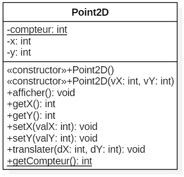

Ajout des attributs et d'une méthode static dans Point2D.
Reprenez votre classe Point2D.
Ajoutez un attribut à cette classe qui devra compter le nombre d'objet créé dans cette famille (la famille des Point2D).
L'attribut étant commun à toutes les instances de la classe Point2D il sera static, son type sera un entier.
Incrémentez sa valeur dans les constructeurs de la classe Point2D.
Ajoutez une méthode qui devra rendre la valeur de l'attribut, ce dernier étant static, la méthode sera aussi static.
En UML les éléments statiques sont soulignés.